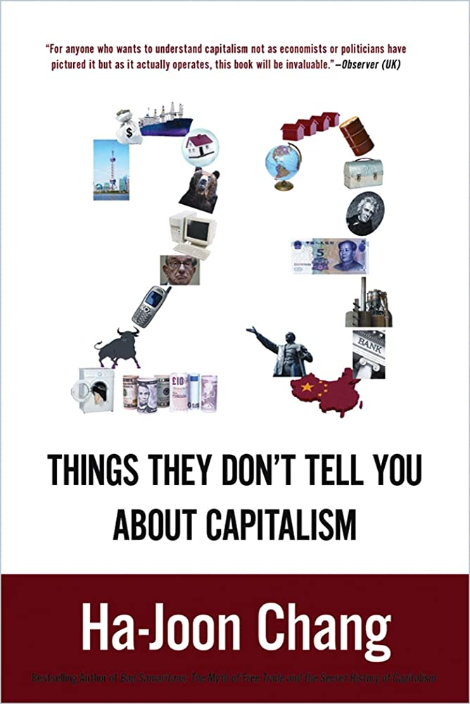

We find that transitions from out-of-pocket to government-predominant health financing systems resulted in greater immunization coverage, and improved health system outcomes (life expectancy, under-5 mortality and incidence of catastrophic health expenditure) than social-health-insurance-predominant HFS. For the few outcomes where this was not the case, social health insurance and government-predominant HFS showed similar results.
In this paper, social health insurance financing refers to health expenditures channelled via SHI agencies that require a contribution to access services, irrespective of whether the contribution is subsidized by the government or not.
This paper uses novel micro-data on natural resources and administrative health data in Brazil to study how economic booms in minerals affect health at birth. 1: Overall, mining activities generate more economic opportunities, but only following economic booms in metallic minerals.
2: municipalities with higher historical endowments of mineral resources experience an increase in premature births and births with low APGAR scores after an increase in international prices of minerals.
Both the human capital approach and the friction cost approach underestimate the true potential productivity costs associated with nocturia by around 16%. We propose a generalized GE/partial equilibrium multiplier to approximate the GE effect for other health conditions.
Click on this article for more about the minimum wage controversy (evidence studies).
Despite what self-appointed economics experts on the internet may say, my claim that basic economics is not sufficient for policy analysis is not controversial within the discipline of economics. If I were to say in a labor economics seminar that “the most basic model we have fails to make sense of the evidence on policies like the minimum wage,” nobody would bat an eyelid. In fact, the point is so obvious it would scarcely be worth mentioning. Yet when “economics” travels into the political sphere it becomes more rigid and doctrinaire, often promoted by people with limited knowledge of the actual ideas they're claiming to endorse (though sadly, also by people who should know better, as we'll see).
Response to this quote that rejects the rejection of the minimum wage theory:
Although Buchanan is obviously correct that ideas taught in physics 101, like “gravity makes things fall,” are pretty reliable, no self-respecting physicist or engineer would analyze the real world or design a plane using the introductory model with gravitational force but no friction or spin, not to mention promoting a view of physics with no considerations at the level of quantum mechanics or general relativity. Similarly, no economist, pundit, or policymaker should be recommending real world policies based on the Econ 101 model.
Accepting that the introductory demand-supply model has limited relevance is the scientific thing to do.
Suppose you own a company that sells tables. You get hit by a pandemic, and the government provides massive fiscal and monetary (are those not the same thing?) stimulus, and people want to buy more tables. Can you increase supply? Not really, since you don't want to train more workers or buy more table-making equipment for a temporary surge of demand for tables. People are ordering more tables than you can make, and your orders are backlogged. So you... increase your prices to have less, but happier, customers. Politicians start screaming that the high-profit margins prove that this inflation is really “greedflation” driven by monopoly power
Democrats have gaslit themselves about inflation - I'm referring of course to left-wing Democrats' take on the current inflation situation.
To the extent that this blaming corporate greed for everything is just rhetoric to pass the time while the Federal Reserve does its work, I don't mind at all. But Elizabeth Warren introduced a bill last week she calls the “Price Gouging Prevention Act of 2022,” which is more serious business. [...] You can get out from under the charge of price gouging if you can prove that you only raised prices because the price of your inputs went up. This suggests to me that Democrats perhaps got a bit high on their own supply last year in attributing various inflation phenomena to “supply chain problems.”
There were specific problems in the supply chain for automobiles, but in general, people just bought a ton of durable goods last year. If we'd actually had a negative shock to global supply chains, then nominal prices would have gone up but inflation-adjusted consumption would have gone down. What actually happened, though, was people bought more durable goods than ever in inflation-adjusted terms. The problem in the supply chain was people ordering tons of stuff.
At the end of the day, though, only a very stupid person would think companies suddenly became greedy in 2021 after years of being non-greedy. [...] Greed is a constant. But the cause of this particular inflation was a surge in demand, not a surge in greed.
At times, it probably is appropriate to respond to economic problems with a mixture of rationing and price controls. Like during WWII, or to address a temporary baby formula crisis induced by the shutdown of a plant.
But what happens when demand soars and you don't raise prices? Well, you sell out of stuff. And if people started regularly going to the store and finding that all kinds of things were sold out, they'd start panic buying whatever wasn't sold out in order to stockpile (the prices would be low after all). And the panic buying would just lead to more shortages. Then to fix things, you'd need a real government rationing system — so much bacon per week, so many eggs, etc. And then you'd have illicit trade in ration coupons, a black market, the whole deal.
a surge in spending means a surge in output because all kinds of idle resources are brought online to capture the rising spending. But we do not currently have much in the way of idle resources. The unemployment rate is very low. The ports and freight trucks are crowded.
Back in 2008-2012, the country could have used a lot more unorthodox economic thinking. Protectionist trade policy might have been beneficial. Large-scale debt cancellation definitely would have been beneficial. Deficits didn't matter. We were plagued by a shortfall of demand, and all kinds of wild populist schemes could have helped people a lot.
But the current inflationary situation calls for the kind of tedious neoliberal thinking that has become painfully unfashionable these days. Fiscal austerity would be helpful. The Federal Reserve raising interest rates is helpful. And most of all, over the medium-term, supply-side reforms that raise economic efficiency would be helpful. So freer trade is good. Expanding legal immigration is good. This stuff the White House did last fall on housing is good, but if we could listen to Brian Schatz and go even more YIMBY that would be better.
In this article, Maria mixes three theories together, which I attempt to untangle:
1: Adam Smith allegedly offers a model of economic development in both his Lectures on Jurisprudence and the Wealth of Nations— but all the examples Smith uses are exceptions to his allegedly theoretical model, a strange choice if Smith really wanted to use that model to explain development. I suggest Smith is criticizing rather than endorsing. He tells us we are naturally driven to build models, to build systems, to imagine “invisible chains which bind together all these disjointed objects … [thus] … introduc[ing] order into this chaos of jarring and discordant appearances.” What if he was saying that our tendency is to do that even though reality does not fit the model?
2: Perhaps the models we create are not meant to necessarily be correct or definite, rather are meant to be replaced by better systems in the future.
3: The four stages are a taxonomy of different relations between means of production and social, moral, political, and legal institutions, not a model of development from one stage to another. It may not be an accident that Smith tends to use “state of society” rather than “stage of society.”
Despite the efforts made, successive plans, and initiatives begun since the 1970s, economic diversity has proven difficult to achieve in the oil exporting countries that did not adopt sufficient macroeconomic policies to neutralize the fluctuations of oil revenues on the local economy. As a result, oil sector shocks raise the degree of risk and lead to a disruption of the relationship between the tradable sectors and the non-tradable sector, despite the fact that the nominal exchange rate is fixed with the dollar.
Government spending is affected by oil revenues up and down, leading to instability of the national economy, and posing risks to long-term private investment.
At the rising oil revenues stage, spending increases greater than the absorptive capacity of the economy, thus raising inflation, wages, and real estate prices. This raises economic costs for producers in tradable sectors, weakens the competitiveness of the local economy and reduces the attractiveness of the economy to invest in long-term development projects.
In contrast, in low oil prices period, oil governments resort to one of the following two policies. The first policy is to reduce spending as much as possible. Development sectors, such as health and education, suffer most. These are essential for achieving sustainable development.
The second policy is to focus on non-oil revenues by raising taxes and fees to maintain the high level of government spending, which has been inflated by oil revenues. This policy inevitably increases the cost of business to the private sector, weakens the purchasing power of an individual's income, reduces real wage, thereby reducing productivity, or the private sector is forced to raise nominal wages to maintain purchasing power to avoid a decline in productivity. In a country like the Kingdom, more than 50% of employees in private sector are non-Saudis, it is expected that higher wages are required to accept employment in the Kingdom. This raises the wage bill and weakens the competitiveness of the private sector. As an economic result of the increased non-oil revenues, aggregate demand will decrease and business performance costs will rise, and the economy begins to seek a new equilibrium point.
Recommendation: One of the most significant tools to achieve stability, mentioned in the economic literature and proposed by international organizations, such as the International Monetary Fund (IMF), is the fiscal rules for fiscal policy. Some of its most important features, are determination of the mechanism for pricing oil for budgetary purposes, based on historical and future average oil prices for a number of years, and directing part of the budget surpluses to a budget balance fund, an sovereign wealth fund (long-term) and a local development fund, in addition to determining the percentage of spending for local income and setting ceilings for revenues, as well as public debt. Moreover, tax rates should be fixed during different periods of oil price fluctuations, with the possibility of changing them slightly for fiscal policy purposes.
Medium-term budgets should be built for 3 years at the sectoral level, according to medium-term development plans, thus helps to know the trends of government spending, not only for one year, but for 3 years. It will contribute to the ability of the private sector for investment planning with better certainty and lower risk; it is one of the most important drivers of private investment. In order to achieve the desired benefits from fiscal rules, they must be clear and institutionalized, raising investor confidence and contributing to the stability of the economy.
Current Picture: One of the most reliable recent initiatives is what the Minister of Finance announced during the Financial Stability Conference in November 2021, organized by the Capital Market Authority (CMA), that the government will adopt fiscal rules to manage the state's fiscal policy and deal with financial surpluses; its details may be announced later. These initiatives may be an important step that contributes to economic diversification.
📰 2014: it is illegal to sell tobacco products to under-18s and to smoke in cars when a child under 12 is in the vehicle (Abu Dhabi)

23 Things They Don't Tell You About CapitalismHa-Joon Chang (2010)
Thing 1: there is no such thing as a free or fair market.
Thing 6: Greater macroeconomic stability has not made the world economy more stable.
Economic stability, defined by free market economists as very low (ideally zero) inflation, is both an elusive and a destructive goal. Low inflation discourages investment (long term bad), and creates job insecurity. ... it also causes financial crises?
The free-market policy package, often known as the neo- liberal policy package, emphasizes lower inflation, greater capital mobility and greater job insecurity (euphemistically called greater labour market flexibility), essentially because it is mainly geared towards the interests of the holders of financial assets. Inflation control is emphasized because many financial assets have nominally fixed rates of return, so inflation reduces their real returns. Greater capital mobility is promoted because the main source of the ability for the holders of financial assets to reap higher returns than the holders of other (physical and human) assets is their ability to move around their assets more quickly (see Thing 22).
📰 2009: Sheikh Khalifa bin Zayed bans smoking and advertising for smoking in public places in Abu Dhabi
Card and Krueger's meta-analysis of the employment effects of minimum wages challenged existing theory. Unfortunately, their meta-analysis confused publication selection with the absence of a genuine empirical effect. We apply recently developed meta-analysis methods to 64 US minimum-wage studies and corroborate that Card and Krueger's findings were nevertheless correct. The minimum-wage effects literature is contaminated by publication selection bias, which we estimate to be slightly larger than the average reported minimum-wage effect. Once corrected, little or no evidence of a negative association between minimum wages and employment remains.
📰 2007 December: Dubai reduces the maximum 2008 rent increase to only 5%.
Except for the period 1998-2000, the euro zone has not been achieving Intertemporal Solvency [the discounted value of the sum of future primary budget surpluses (excluding interest payments on the debt) must cover the present public debt - ie, the real growth rate must be higher than the real interest rate.] The public debt, in relation to GDP, is still very high in Italy at nearly 110% and it is close to 60% of GDP in the three other major EMU countries.
An increasing number of statements - by economists, governments and even from the European Commission - argue that the euro zone's present fiscal policy rules need to be changed. Naturally, deciding to change rules as soon as they become a constraint and a nuisance entails the risk of losing credibility. France and Germany may well see their fiscal deficits exceed 4% of GDP in 2003 and 2004. However, in this study, we would like to explore various approaches that could be used to replace the current rules by more sensible ones.
it does not correct the maximum deficit for the cyclical position of countries, and this shortcoming curtails the counter-cyclical reaction capacity of fiscal policies
it does not take into account the fact that public debt ratios vary widely among European countries (the condi- tions that ensure intertemporal fiscal solvency are not similar from one country to the next)
it does not include any objective value for the general public debt ratio, although an excessively high general government debt is what can trigger a mechanism of squeezing-out of private debt
in contrast with corporate accounting, it sees public investment as operating expenditure, and includes it in the calculation of the fiscal deficit - [This last point is tricky, since one need to know how to define useful and useless government investment. We will not deal with this issue in this study, and our proposals will include the first three points.]
The Proposal: define an "optimal public debt ratio" [that meets investors' needs without squeezing out private issuers] and introduce a constraint on fiscal deficits at the top of the cycle and not at its bottom [to allow for cyclical flexibility - such an approach forces governments to slash them when growth is strong, and not in cyclical troughs, as this curtails the potential for counter-cyclical policies].
If one wants to maintain the public debt ratio to 60% of GDP in France, Germany, Spain, with a differential between the real rate interest rate and growth of 2 percentage points, a primary surplus of 1.2 percentage point is necessary. France and Germany do not post such a surplus and should therefore reduce their deficit, while Spain has a higher primary surplus. As Italy's primary surplus is close to 4% of GDP, it reduces its public debt by more than 2.5 percentage points of GDP per year, and therefore is implementing a perfectly suitable fiscal policy.
The Stability Pact sets the constraint of a ceiling of 3% of GDP on the deficit at the bottom of the cycle. But it does not set a constraint on the deficit at the top of the cycle; consequently, the room for manoeuvre between the level of deficit effectively hit at the top of the cycle and the one authorised by the Pact at the bottom of the cycle can be far too small to enable fiscal policy to achieve an efficient counter-cyclical stabilisation via fiscal policy.
At the top of the cycle in 2000, the fiscal deficit stood at 1.4% of GDP in Germany, with an identical structural deficit; the situation was very similar in France but worse in Italy. Only Spain had wiped out its fiscal deficit at the top of the cycle. All in all, the euro zone had freed 2% of GDP room for manoeuvre in 2000 that is the gap between the limit of 3% and 1% of actual deficit.
It would have been far more efficient to force countries to balance their budgets or post a budget surplus in 2000 (top of the cycle), and leave them free with respect to the level of their deficit in 2002-2003, with a new constraint stipulating they were to balance their budgets in the next period of high capacity utilisation rates.
“Just as no physicist would claim that “water runs uphill,” no self-respecting economist would claim that increases in the minimum wage increase employment. Such a claim, if seriously advanced, becomes equivalent to a denial that there is even minimal scientific content in economics, and that, in consequence, economists can do nothing but write as advocates for ideological interests. Fortunately, only a handful of economists are willing to throw over the teaching of two centuries; we have not yet become a bevy of camp-following whores.”
James M. Buchanan, 1986 Nobel laureate in economics, writing in the Wall Street Journal on April 25, 1996